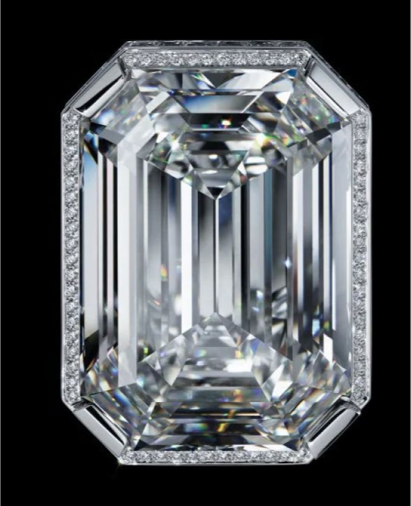

The anatomy of the
The Iconic CHANEL N°5 Celebrates 100 Years With a Magnificent Work of Art
To honor 100 years of the luxury brand’s iconic CHANEL N°5 fragrance, Patrice Leguéreau, director of the Fine Jewelry Creation Studio and master jeweler, has imagined an exquisite and incomparable collection of 123 pieces, the “Collection N°5.” As part of this assemblage, he was inspired to create a singular necklace, a work of meticulous craftsmanship and beauty that interprets the eternal mystery of the legendary perfume.
In 1921, Gabrielle Chanel charged perfumer Ernest Beaux with developing a modern fragrance to showcase the multifaceted nature of femininity.
This boundary-breaking scent — which combined more than 80 ingredients, including synthetic aldehydes — was a huge departure from the one-note floral concoctions popularized by society women of the time. And its name? A tribute to Chanel’s favorite number: 5. As fate would have it, her favored scent medley was Beaux’s fifth sample. And the visionary couturier would extend her luck by introducing the avant-garde fragrance, which ultimately became a best-seller worldwide, on the fifth day of the fifth month of that year. In 1932, Chanel once again shattered the codes of French High Jewelry with her one and only collection in platinum and diamonds. These “Bijoux de Diamants” introduced new ways of wearing adornments and took jewelry into another realm.
“Gabrielle Chanel approached the universes of fragrances and jewelry
with the same visionary values, focusing on audacity and the quest
of excellence. I wanted to rediscover that creative gesture with
this collection.”
— Patrice Leguéreau,
Director of the Fine Jewelry Creation Studio
Stark and graphic, the spartan configuration of the CHANEL N°5 bottle is instantly recognizable.
The classic glass flacon features elegant, clean lines with a
monochromatic white label and chic black lettering. Leguéreau was
inspired by the perfume decanter’s beloved design and envisioned a
magnificent necklace that shared its silhouette.
To create a visual impact worthy of the fragrance’s culture-defining
legacy, Leguéreau had the idea for an impeccable, Flawless Type IIa
55.55-carat center diamond.
“This is an unprecedented approach. We started with a rough diamond
that we had cut, not to make the biggest stone possible but to
obtain a perfect octagonal diamond weighing 55.55 carats.”
— Patrice Leguéreau,
Director of the Fine Jewelry Creation Studio
The gem’s weight is a calculated homage to the designer’s lucky number
and is inspired by the shape of the bottle’s stopper, a design that
reflects the famous Place Vendôme in Paris — also home to the Ritz,
where Chanel resided.
The revolutionary fragrance’s heady and alluring aroma encompasses a
highly complex blend of aldehydes, including an intricately assembled
mélange of delicious florals like ylang-ylang, May rose and jasmine.
They are layered over a warm, woody base of vanilla, vetiver, amber,
patchouli and sandalwood. To bring these elements to life, the
distinct bottle-shaped motif of the necklace features tailor-cut
diamonds of varying proportions. Each stone represents a separate
floral note of the eau’s unique bouquet. The striking gems are
complemented by a waterfall of pear-shaped diamonds that evoke the
liquid effect of perfume drops.
The most potent asset of the venerable scent is its sillage, the
floating essence a perfume leaves as its wearer moves across a room.
And just as CHANEL N°5 leaves an indelible impression that has
influenced our culture over the past 100 years, this exquisitely
curated necklace was designed to be a long-standing and grand honor of
the fragrance’s centennial. The eye-catching gems of the 55.55
necklace diffuse light like a breezy, ethereal aroma. Its sprays of
scintillating stones summon thoughts of the fragrance’s dazzling
olfactory burst. Each jewel was hand-selected to be reminiscent of the
scent’s complexity, collectively giving the statement piece
unparalleled radiance.

The CHANEL 55.55 necklace is a truly breathtaking piece of artistry. Crafted to celebrate Chanel and her legendary fragrance, the unrivaled creation will be on display to the public. By joining the CHANEL Patrimoine, this necklace, rather than being sold, will forever bear witness to this chapter in the history of CHANEL Fine Jewelry.
Experience the unparalleled beauty of Collection N°5.
LEARN MORE